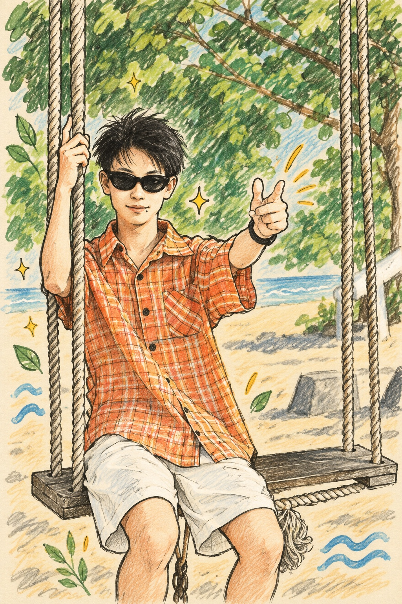
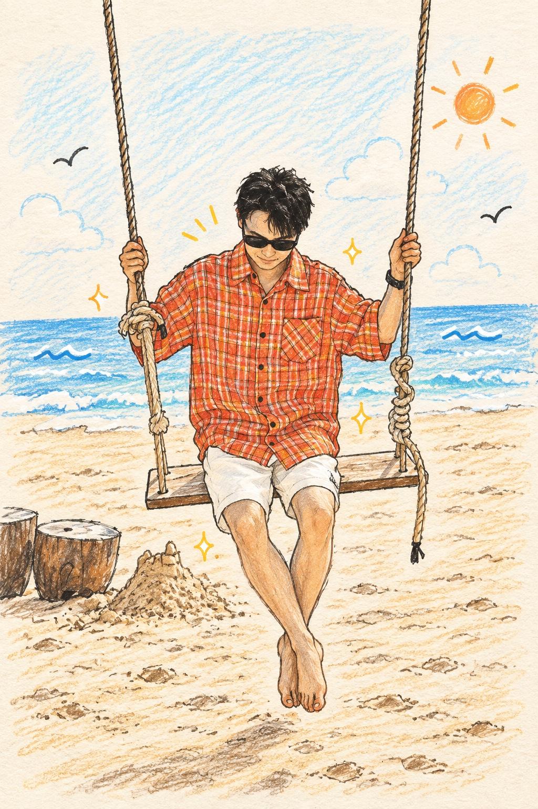

青岛 · 中国海洋大学 · 正在路上Qingdao · Ocean University of China · In progress
GanpingXue
借现实底色，
构一幕理想。Grounded in reality,
building toward an ideal.
中国海洋大学计算机技术硕士生，关注 Agent 开发与海气大模型。Master’s student in Computer Technology at Ocean University of China, exploring AI agents and ocean–atmosphere foundation models.
看看这页的目录Browse this page

借现实底色，
构一幕理想。Grounded in reality,
building toward an ideal.
陵水 · 2025.12LINGSHUI · 2025.12
构一幕理想。Grounded in reality,
building toward an ideal.
01 / 探索与作品01 / EXPLORATIONS & WORK
正在把好奇心，
做成看得见的东西。Turning curiosity
into things you can explore.
先记下正在学习和整理的方向；完整作品会在真实完成后加入。Learning and research in progress; finished work will join when it is ready.
02 / 生活切片02 / LIFE IN FRAGMENTS
去过的地方，
正在发生的日子。Places I’ve been,
days still unfolding.
03 / 关于我03 / A LITTLE ABOUT ME
一半写代码，
一半去看海。Part code,
part sea breeze.
我是 Ganping Xue，中国海洋大学计算机技术硕士生，关注 Agent 开发与海气大模型。喜欢把新的问题拆开、慢慢弄懂，也喜欢把沿途的日子留下来。I’m Ganping Xue, a Computer Technology master’s student at Ocean University of China, exploring AI agents and ocean–atmosphere foundation models. I like taking new questions apart, learning patiently, and keeping small records along the way.
本科 · 软件工程BACHELOR · SOFTWARE ENGINEERING
成都信息工程大学Chengdu University of Information Technology
硕士 · 计算机技术MASTER’S · COMPUTER TECHNOLOGY
中国海洋大学Ocean University of China
04 / 联系04 / SAY HELLO
留张小纸条，
我们从这里聊起。Leave a little note.
We can start here.
勾选你想聊的话题，邮件会替你带上一个简单的标题。Pick a topic and your email will open with a simple subject line.